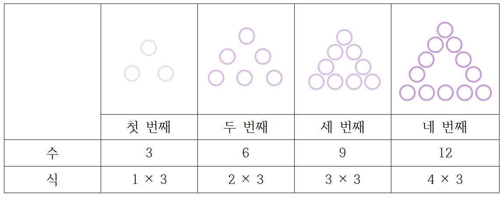

자료를 정리하기
| 색 | 보라색 | 민트색 | 검정색 | 핑크색 |
|---|---|---|---|---|
| 수 (명) | 4 | 1 | 3 | 2 |
조사한 것을 정리하여 표로 나타내면, 유형별 사람 수를 일일이 세어 보지 않아도 알 수 있습니다.
유형별 사람 수의 합으로 전체 조사한 사람 수를 알 수 있습니다.
달력에 나타난 규칙 찾기
6월
| 일 | 월 | 화 | 수 | 목 | 금 | 토 |
|---|---|---|---|---|---|---|
| 25 | 26 | 27 | 28 | 29 | 30 | |
| 1 | 2 | 3 | ||||
| 4 | 5 | 6 | 7 | 8 | 9 | 10 |
| 11 | 12 | 13 | 14 | 15 | 16 | 17 |
| 18 | 19 | 20 | 21 | 22 | 23 | 24 |
- 달력에서 같은 요일이 7일마다 반복되는 것을 이용하여 여러 규칙을 찾을 수 있습니다.
규칙을 찾아 수와 식으로 나타내기

→ 구슬의 수는 3씩 늘어나고 있습니다.
●번째 보석의 수는 ● × 3입니다.
규칙을 추측하고 확인하기
- 수를 늘어놓았을때 규칙을 찾아 다음번에 올 수를 구할 수 있습니다.- 규칙은 한가지만 있는 것이 아닐 수도 있습니다.